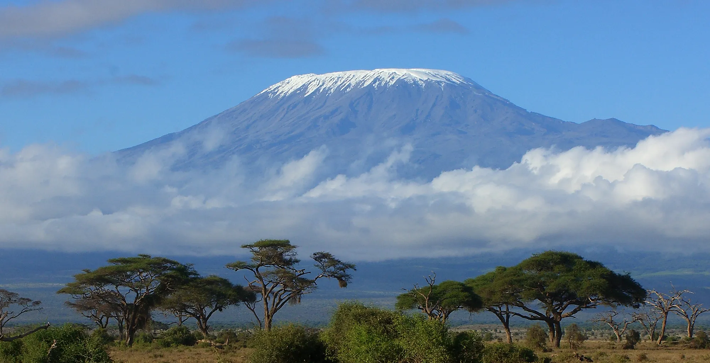

Africa's highest peak. The world's tallest free-standing mountain. 5,895 metres of raw, breathtaking challenge — summited with our expert team at your side every single step.
Mount Kilimanjaro is a dormant stratovolcano and the highest point in Africa, rising dramatically from the surrounding savannah plains to its glaciated summit at 5,895 metres. Unlike most of the world's great peaks, Kilimanjaro requires no technical climbing skills or ropes — making it accessible to any fit, determined walker willing to embrace the altitude challenge.
The mountain passes through five distinct ecological zones on the ascent — lush tropical rainforest, fragrant heather and moorland, alien-landscape alpine desert, and finally the arctic summit zone with its ancient glaciers. Each zone is a completely different world, making the journey as spectacular as the destination.
Reaching Uhuru Peak at sunrise — watching the shadow of Africa's greatest mountain stretch across the plains below — is a life-defining moment. Our expert team makes it happen safely, with a 95% summit success rate built on proper acclimatisation, pacing and professional mountain craft.

Climbing Kilimanjaro is like travelling from the equator to the Arctic in just a few days. Each zone presents a dramatically different landscape, climate and ecosystem.
Farms, banana groves, coffee plantations and small villages surround the lower slopes. The Chagga people have cultivated this fertile volcanic soil for centuries. Most routes begin here.
Dense, lush montane rainforest dripping with mosses and ferns. Home to blue monkeys, colobus monkeys, elephants and buffalo. The forest creates its own rain — mist often rolls through even on clear days. One of Africa's most magical environments.
Open moorland with giant heather trees, lobelia and groundsels — extraordinary otherworldly plants that have evolved for high altitude conditions. Views of the summit open up dramatically here. Nights become cold; acclimatisation walks are critical in this zone.
A vast, barren landscape of volcanic rock, scree and dust. Almost nothing grows here — it is the most striking and surreal part of the climb. Days are hot and sunny; nights are bitterly cold. The summit crater and Kibo hut are visible in the distance. Mental strength becomes as important as physical fitness.
Ice fields, glaciers and the magnificent crater rim. The summit push begins at midnight, climbing through darkness to arrive at Stella Point (5,739m) and then Uhuru Peak (5,895m) at sunrise. Temperatures can drop to -20°C. This is the moment every climber lives for — standing on top of Africa as the sun rises over the continent.
We operate all five major routes on Kilimanjaro. Each offers a distinct experience — different scenery, difficulty levels, and acclimatisation profiles. Our team will help you choose the best route for your fitness level and timeframe.
Uhuru Peak · Tanzania
Our Kilimanjaro packages are comprehensive — from the moment you arrive in Arusha to your safe return at the end of the climb.
Kilimanjaro is not technically difficult, but altitude is the primary challenge. The best preparation combines cardiovascular fitness, mental readiness and smart acclimatisation strategy.
Train for 3–6 months with hiking, running, cycling or swimming. Aim for 4–5 sessions per week. Day hikes with elevation gain are the most specific preparation possible.
Choose a longer route (7–8 days) for better acclimatisation. "Climb high, sleep low" — our guides build acclimatisation walks into every itinerary. Pole, pole (slowly, slowly) is the Kilimanjaro mantra.
Drink 3–4 litres of water daily on the mountain. Eat all meals even without appetite — your body needs the fuel. Avoid alcohol in the days before and during the climb.
Quality, warm, layered clothing is essential. Waterproof boots, trekking poles, a sleeping bag rated to -15°C, and a good headlamp are non-negotiable items for a safe, comfortable climb.
Send us your preferred route, dates and group size. Our mountain specialists will put together the perfect Kilimanjaro package within 24 hours.